Oleksandr Antonyuk. Faith Cannot Hinder an Artist
Even now not everything in the Bible is clear to me, but everything in it is "tasty". Painting helps me "chew over" what I have read. "Accidents" often appear in my works, and they add a new facet to the way a theme or an image unfolds.
Faith cannot hinder an artist.
My guest is the remarkable and very interesting Ukrainian artist Oleksandr Antonyuk. (Oleksandr's Facebook page)
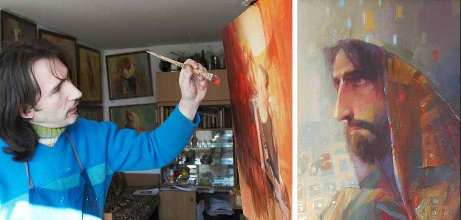
Oleksandr comes from Kamianets-Podilskyi. He graduated from the Faculty of Fine Arts and Drawing of the Vasyl Stefanyk Precarpathian University. He now lives and works in Khmelnytskyi. His works are in private collections and in various galleries in Ukraine and abroad. Oleksandr Antonyuk is a member of the National Union of Artists of Ukraine.
His favourite themes are biblical, historical and fairy-tale or fantastic subjects.
The artist paints the biblical heroes of the Old and New Testaments with special love and reverence.
Oleksandr kindly agreed to answer my questions
Ephraim Kalish: Oleksandr, the characters in your biblical works break away from the average idea of them: they have no eyes rolled up to heaven, no grandeur of giants. They are very human and seem to see themselves with a light irony.
Oleksandr Antonyuk: Fairy-tale characters live in fairy tales… The people you meet in Scripture are real and alive. Their strength and greatness are not in themselves but in the Creator.
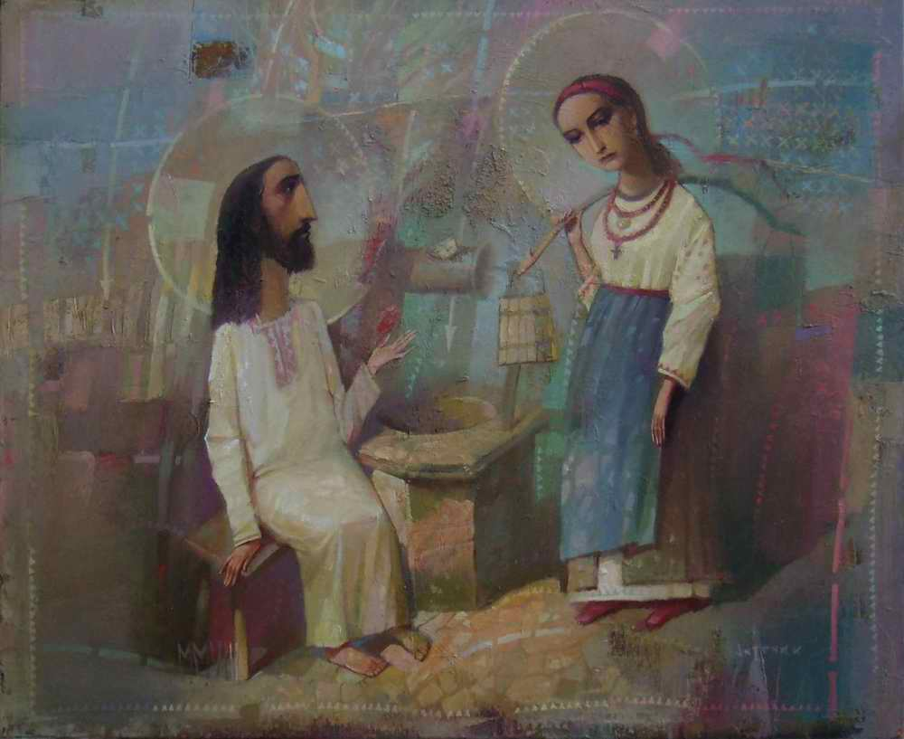
Ephraim Kalish: There is a centuries-old tradition of depicting biblical characters close to the culture of the people among whom the artist works. Your Christ and the Samaritan woman wear vyshyvankas (Ukrainian embroidered shirts). That in itself makes one smile. What does the "Ukrainisation" of biblical characters mean to you?
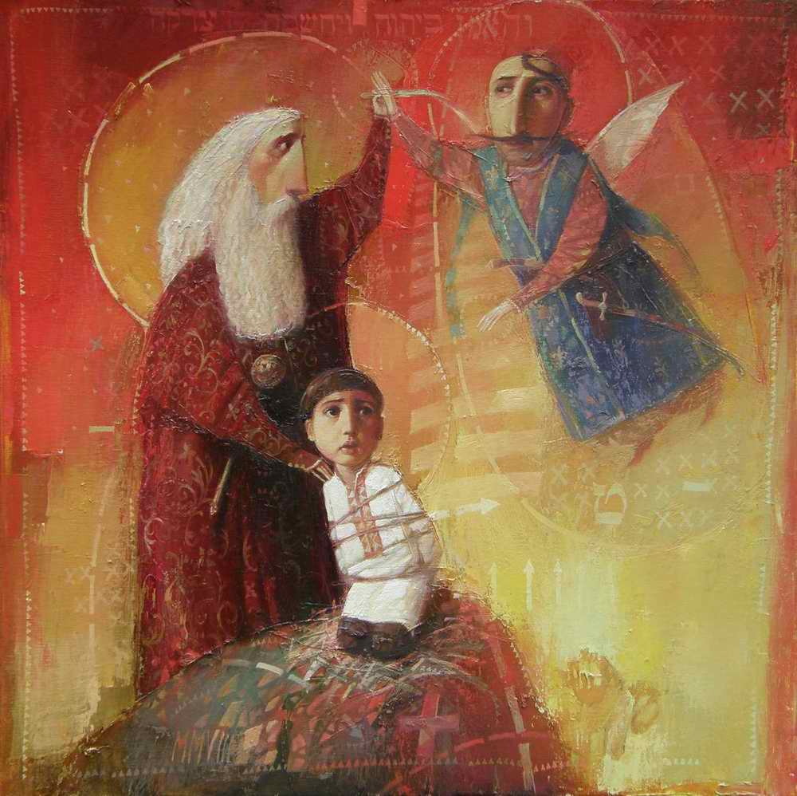
Oleksandr Antonyuk: Through a familiar, recognisable "form", a familiar "language", I want to bring the viewer closer to the events described in Scripture… I invite people to relate to an event that happened long ago as something happening here and now…
Ephraim Kalish: How would you describe in a few words your approach to biblical themes in your work? What is the Bible to you? What draws you to it as an artist?
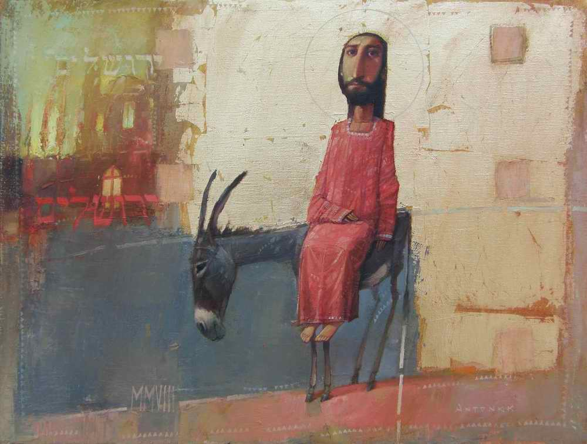
Oleksandr Antonyuk: It is very hard to answer serious questions seriously… Since childhood I knew that God exists… It was a kind of given… As a result I wanted to find out Who He is and why I am here. The Bible, too, was not the result of analysis and soul-searching… And although even now not everything in it is clear, everything in it is "tasty"…
Painting helps me "chew over" what I have read. "Accidents" often appear in my works, and they add a new facet to the way a theme or an image unfolds.
Ephraim Kalish: How do you explain your interest in the so-called Old Testament and its heroes? The average Christian is usually not much concerned with "such antiquities".
Oleksandr Antonyuk: The modern world, with its pace and its superficial attitude to any "information", does not spare even Christians… :)
Those who are not interested in the Old Testament are in fact not interested in the New Testament either… "And beginning at Moses and all the prophets, he expounded unto them in all the scriptures the things concerning himself…" Understanding the roots of the teaching gives familiar words extra shades and depth, adds light… There are no superfluous words in Scripture. Whoever understands this tries to get into every WORD.
Ephraim Kalish: Could you tell us about some of your biblical works?
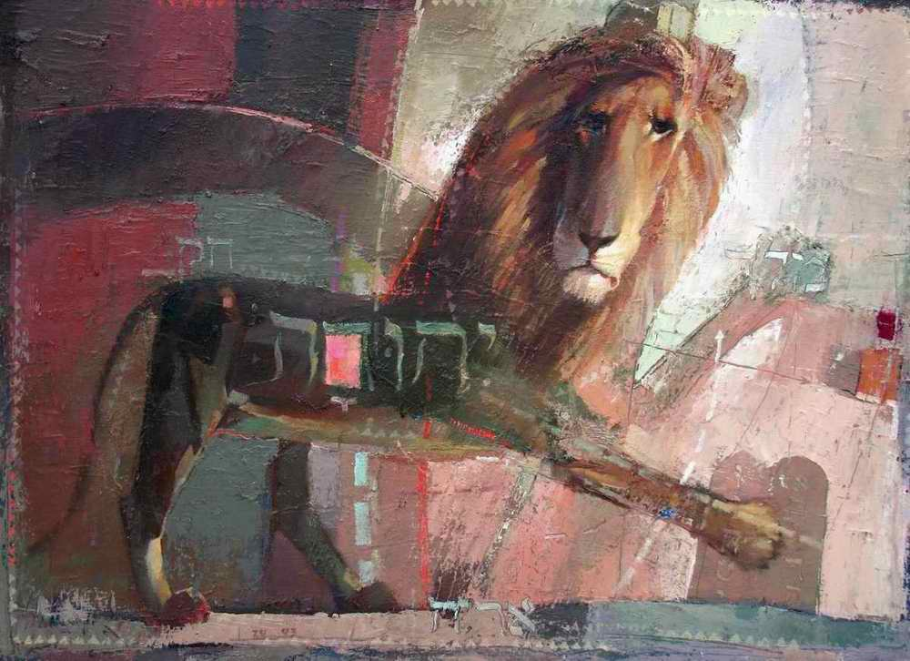
Oleksandr Antonyuk: In the course of work there are the "accidents" I mentioned earlier. For example, when I was painting "Judah Is a Lion's Whelp", I wrote "Yehudah" in Hebrew on the lion's body. The letter dalet fell on a rectangular patch… I noticed that without this letter four remain, the very four that make up the Name of the Creator. In its shape the dalet resembles a door, and together with the patch the "door" stood out even more clearly… So in the very name Judah a prophecy about the Messiah from the tribe of Judah opened up to me. Hebrew is a unique language.
More about this here.
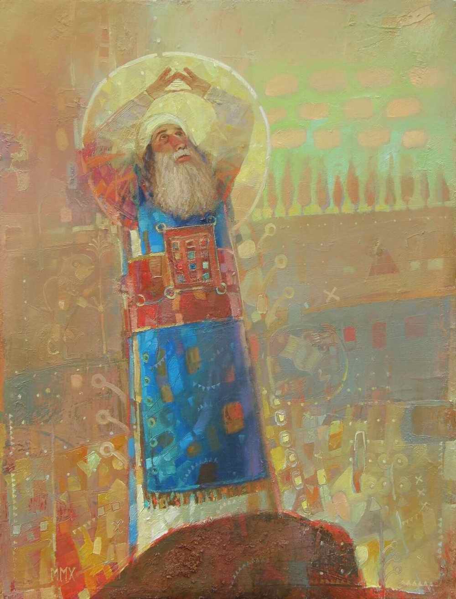
Ephraim Kalish: The Jewish theme runs like a dotted line through your work: "The Promised Tram", "Boy Playing the Violin". Some of your works contain specific details unknown to a wide non-Jewish audience: for example, Aaron's hands folded in a special way for the priestly blessing, in the shape of the letter shin.
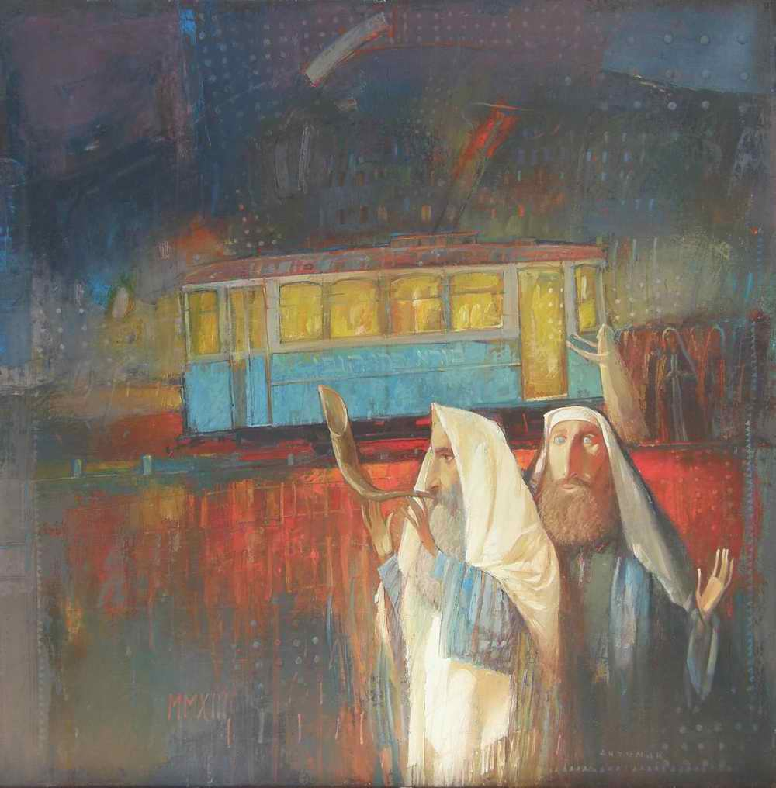
Oleksandr Antonyuk: I have not dug deep :), but it can be explained by the influence of the "natural olive tree". I tried to learn Hebrew on my own, but that is not with my diligence :)… so I know a few words.
Ephraim Kalish: There are various sacred signs (Greek, Chinese, Sanskrit… :). Why do you mainly use the letters of the ancient Hebrew alphabet, even in subjects not connected with Scripture? What do these symbols carry for you?
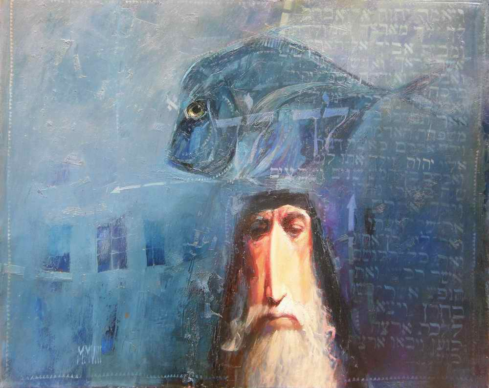
Composer Daniel Kruglov (an interpretation of the weekly Torah portion "Behar-Bechukotai")
Oleksandr Antonyuk: Well, first of all, it is beautiful.)) The point is that along with their image the letters carry meaning in themselves… they are also the code of creation, something like DNA. Sometimes I interweave them with simple geometric forms: a circle, a triangle, a square. These are a kind of hints in the picture for finding the "direction"…
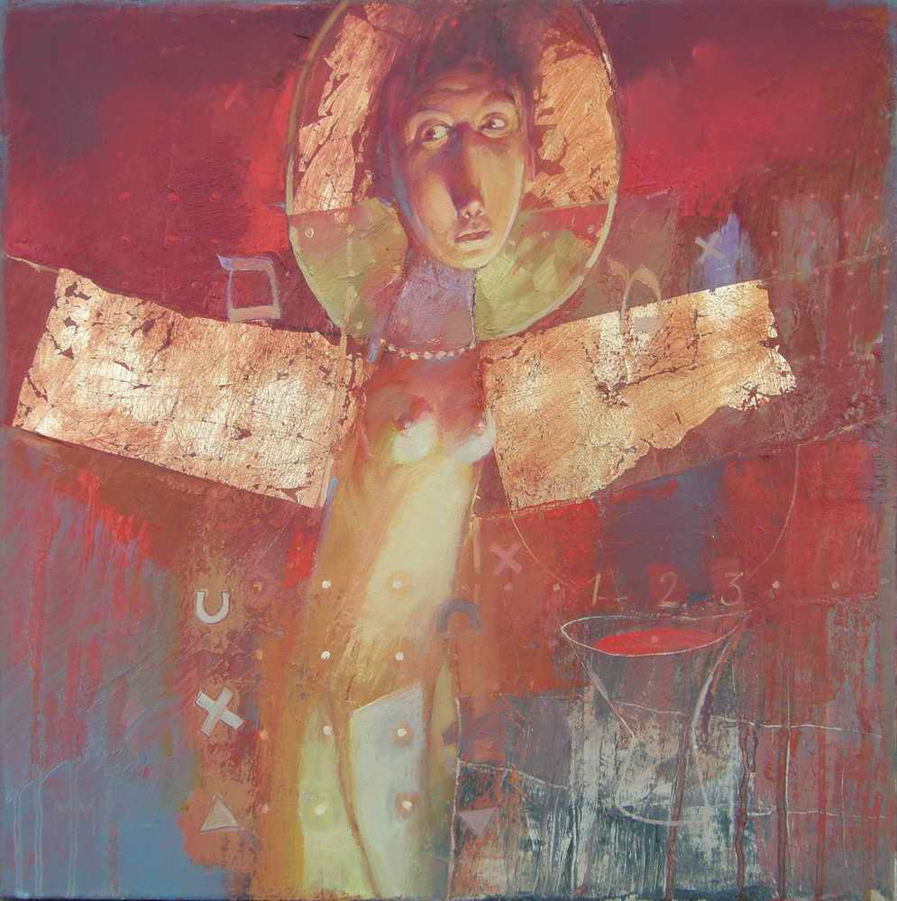
"Anatomy of the Phoenix" is not an illustration of the myth, just an image (like the vyshyvanka) to express a certain feeling… it is the created world, a world that seems to have risen from the ashes… "And the earth was without form, and void; and darkness was upon the face of the deep…" That is where, from feeling rather than understanding, the two forms of the letter mem appear, the open and the closed.
Ephraim Kalish: Have you ever done monumental projects, murals…? What size are your works?
Oleksandr Antonyuk: I did "monumental projects" in the army. That was the time when the Lenin rooms were being turned into recreation rooms. Most of my works are under a metre, but there are exceptions.
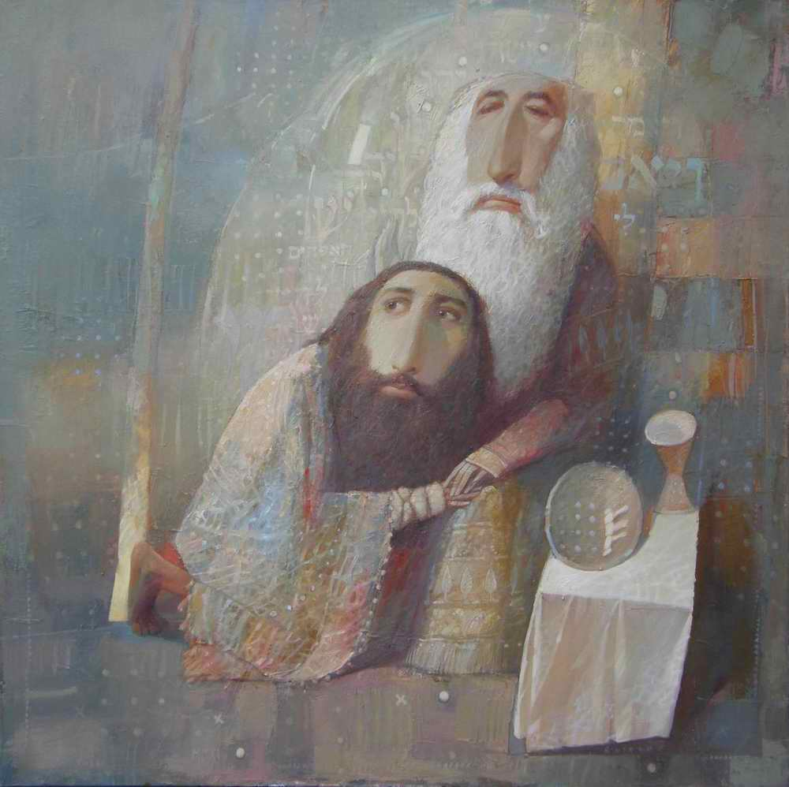
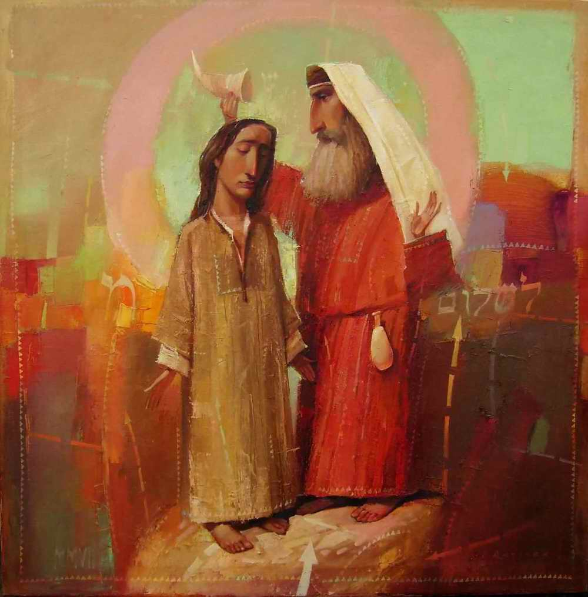
Ephraim Kalish: Some of your works exist in several versions: one in soft pastel tones and another in harsh, active colours. Is that because of a client's wishes, or did you set yourself different tasks?
Oleksandr Antonyuk: It depends only on my mood. There are themes I sometimes want to come back to, but with a new store of feelings and skills. Examples are "Anatomy of the Phoenix" and "The Last Tea Party in Eden (Paradise)".
From one of Oleksandr Antonyuk's exhibitions
Ephraim Kalish: Unfortunately, it is not very common for an artist of a high level to be on friendly terms with the Bible. Sadly, today these things go separate ways. Why do you think faith hinders an artist today?
Oleksandr Antonyuk: It is hard for me to answer for other artists, but it seems to me that people who dive into Scripture may not feel the need to paint, and those who can paint do not want to dive in… Faith cannot hinder an artist… Another question is what goals the artist sets himself. If it is to succeed, then he will depend on the "demand" shaped by the people who sell art…
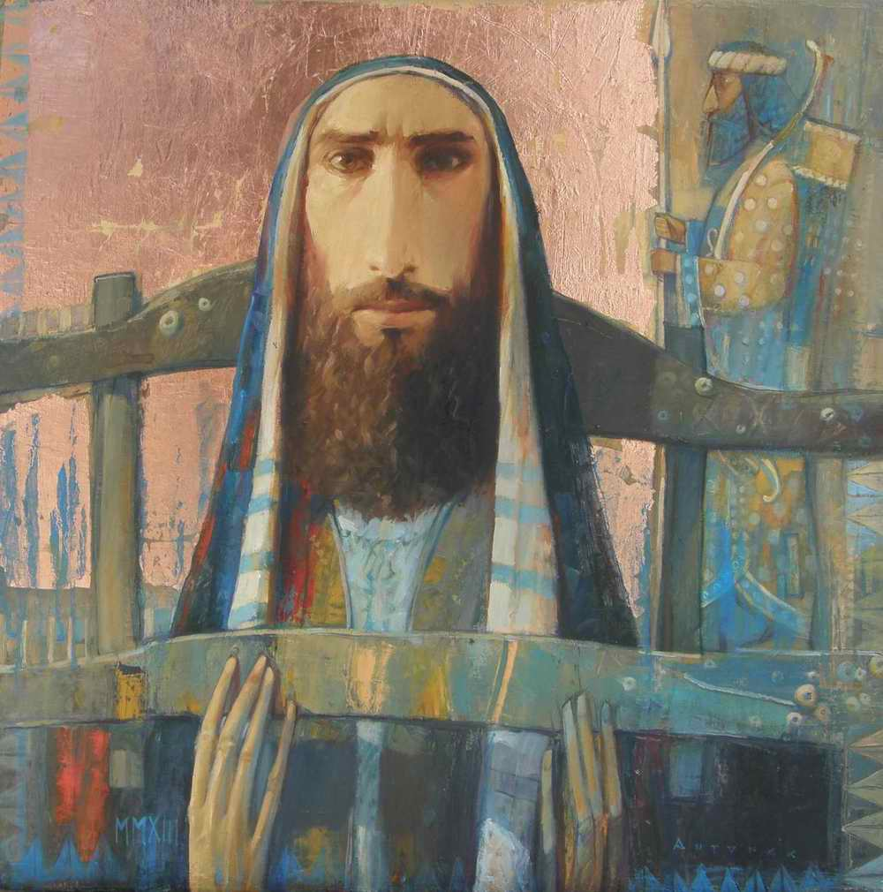
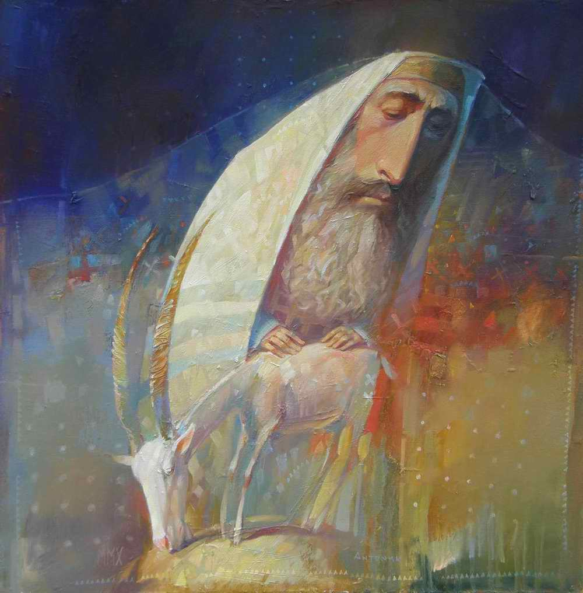
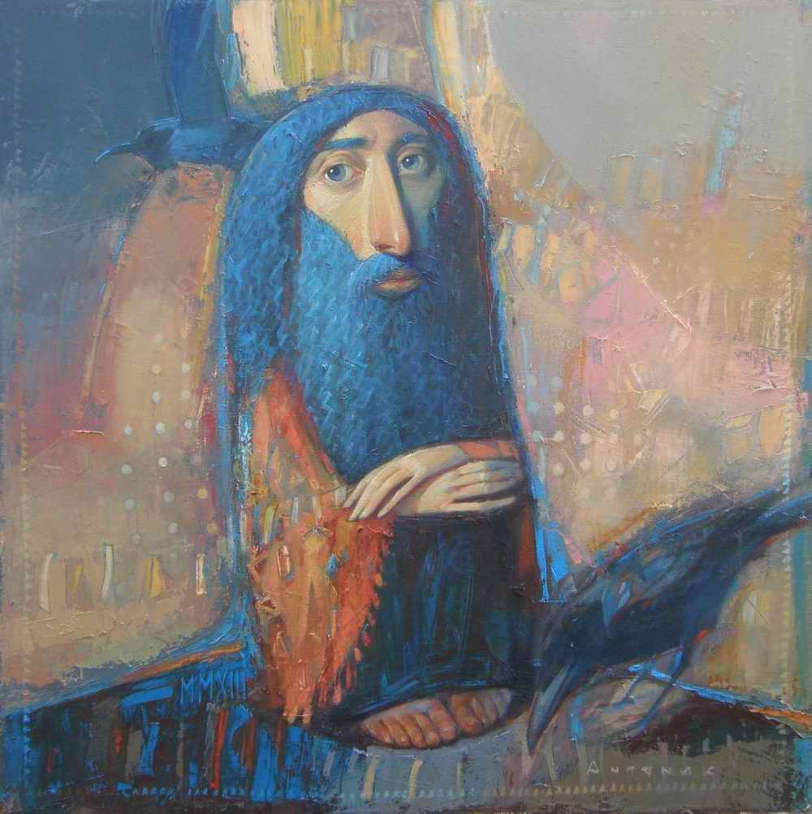
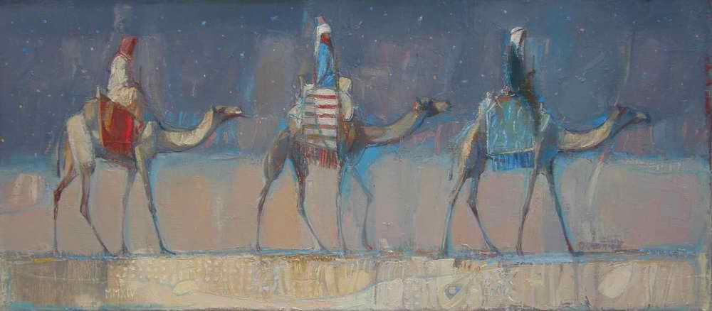
See also another interview with Oleksandr Antonyuk:
Recorded by Ephraim Kalish